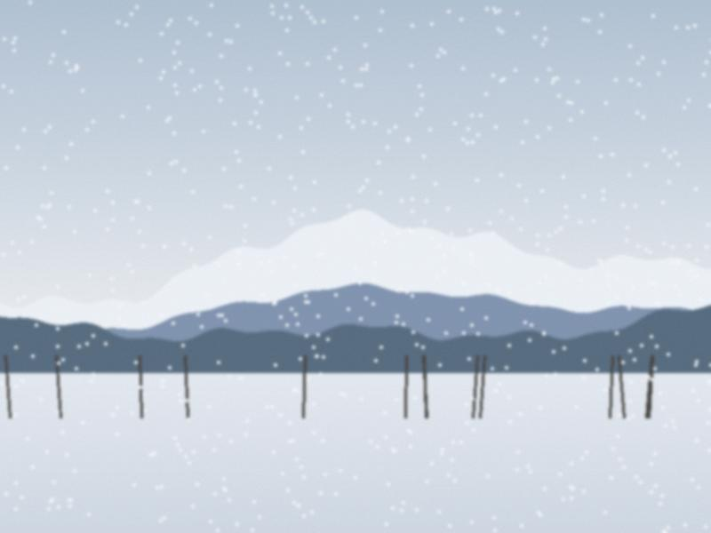

Archive for the ‘Town’ Category
The quarantine begins
It started suddenly. The kindergarten is closed from tomorrow. School is closed for three weeks, "maybe more." At the…
♥ 55 · 0 comments

A day in the lane
The lane in front of our house after the night of snow. Snow in the night, a metre in the lane. At six o'clock every…
♥ 26 · 0 comments